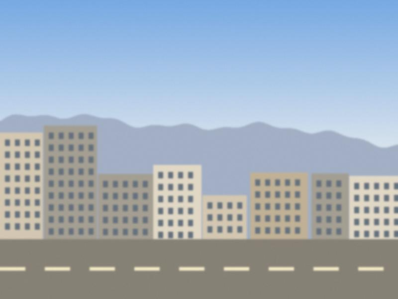

Logos for every toi hall
30 Apr 2023 · 2 min read
My first paid job, 2011: a logo for a toikana. They wanted "something gold, with a crown, and also modern". I made a gold crown on a navy square. Modern was the square.

A sign I drew, on the roof of a hall on the central avenue. 12 years of weather and it is still gold-ish.After that every hall in Talas came to me, because wedding halls talk to each other. Altyn Ordo, Dastan, a place with a fountain that never worked. Lesson one: the client always wants a crown. Give them the crown, then fix everything around it.